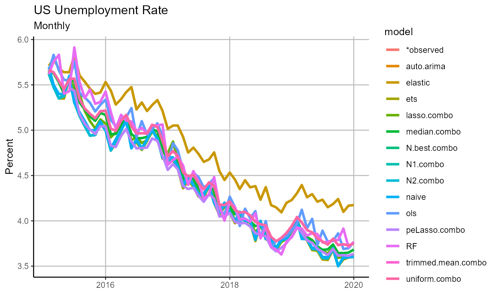
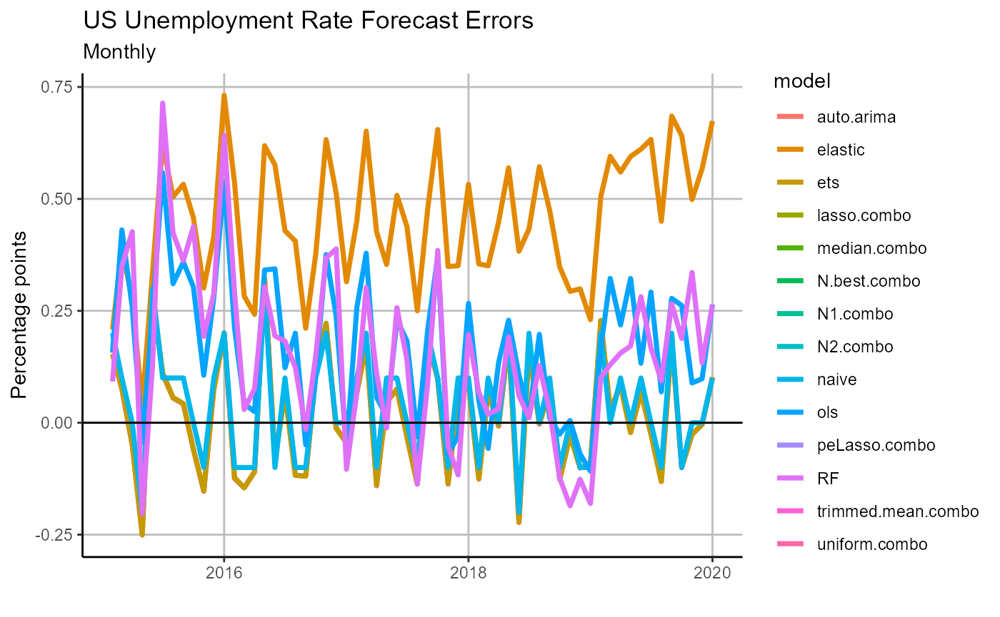

vignettes/3_analysis.Rmd
3_analysis.RmdNow that we have a collection of forecasts, we would like to know which ones to use. OOS has two ways to evaluate forecasts, error analysis and visualization.
First, we can calculate various loss functions for each model found in a long-form data.frame in the same style as forecast_univariate, forecast_multivariate, and forecast_combine output.
# calculate forecast errors
forecast.error = forecast_accuracy(forecasts)
# view forecast errors from least to greatest
# (best forecast to worst forecast method)
forecast.error %>%
dplyr::mutate_at(vars(-model), round, 3) %>%
dplyr::arrange(MSE)## # A tibble: 14 x 5
## model MSE RMSE MAE MAPE
## <chr> <dbl> <dbl> <dbl> <dbl>
## 1 peLasso.combo 0.014 0.117 0.098 0.023
## 2 N.best.combo 0.015 0.124 0.103 0.024
## 3 N1.combo 0.015 0.124 0.102 0.023
## 4 auto.arima 0.016 0.128 0.107 0.024
## 5 ets 0.016 0.128 0.107 0.024
## 6 N2.combo 0.016 0.125 0.104 0.024
## 7 naive 0.016 0.126 0.103 0.024
## 8 lasso.combo 0.021 0.144 0.117 0.027
## 9 median.combo 0.024 0.153 0.125 0.028
## 10 trimmed.mean.combo 0.034 0.184 0.154 0.036
## 11 uniform.combo 0.034 0.184 0.154 0.036
## 12 ols 0.054 0.232 0.189 0.043
## 13 RF 0.058 0.242 0.192 0.043
## 14 elastic 0.226 0.476 0.453 0.107Through comparing errors we can see that the partial egalitarian LASSO forecast combination outperformed the rest of the pack, while the the simple ARIMA, ETS, and random walk models outperform all multivariate methods. Moreover, we can additionally comparing forecasts in statistical tests or error ratios. Here we see how all of our forecasts compare to a baseline random walk, where an error ratio smaller than one signals that a forecast method has a smaller error (that is, does better) than the random walk.
# compare forecasts to the baseline (a random walk)
forecast_comparison(
forecasts,
baseline.forecast = 'naive',
test = 'ER',
loss = 'MSE') %>%
arrange(error.ratio) %>%
dplyr::mutate_at(vars(-model), round, 3)## model error.ratio
## 1 peLasso.combo 0.887
## 2 N1.combo 0.956
## 3 N.best.combo 0.964
## 4 N2.combo 0.978
## 5 naive 1.000
## 6 ets 1.021
## 7 auto.arima 1.022
## 8 lasso.combo 1.328
## 9 median.combo 1.470
## 10 trimmed.mean.combo 2.126
## 11 uniform.combo 2.126
## 12 ols 3.363
## 13 RF 3.650
## 14 elastic 14.132Then, after comparing forecasts based on errors, we can visualize our output.
Currently OOS helps us quickly visualize both our new forecasts, as well as the associated forecast errors. We will first view our forecasts.
# chart forecasts
chart =
chart_forecast(
forecasts,
Title = 'US Unemployment Rate',
Ylab = 'Percent',
Freq = 'Monthly')
chart Viewing our forecasts makes it apparent that the elastic net was a clear outlier, and it is no surprise it did not perform well in ex post analysis. We next turn to our forecast errors.
# chart forecasts
chart.errors =
chart_forecast_error(
forecasts,
Title = 'US Unemployment Rate Forecast Errors',
Ylab = 'Percentage points',
Freq = 'Monthly',
zeroline = TRUE)
chart.errors
From our errors plot we can see that there appears to be a positive bias across our forecasts, and perhaps this is a signal that we should revisit our forecast model selections, training routines, or exogenous variables. Iterating across model and training design to optimize our forecast pool is outside the scope of this introduction, but we encourage those interested in practicing with OOS to tackle the problem, all the tools are there!
During our brief walk through of the basic OOS workflow, we have successfully created out-of-sample forecasts for the US unemployment rate over a five year period using univariate, multivariate, and ensemble methods. Then we were able to compare these methods and discern that while forecast combinations were on whole the best performing class of forecasts, the simple ARIMA, ETS, and random walk all did very well in comparison to the pool of multivariate models.
Through this exercise we have demonstrated just how easy OOS makes it to test times series forecasting methods in pseudo-real time. However, this walk through only touches on the surface level capabilities of OOS, please see additional articles and vignettes for a deeper dive into user-defined forecasting methods, additional possible output, and real-time dimension reduction techniques, among other topics.